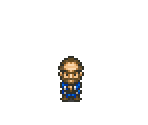

Carpinteiro

O mestre construtor que vive na montanha. Ele é o responsável por todas as expansões da sua fazenda.
- Função: Constrói extensões para a casa (Cozinha e Quarto).
- Localização: Cabana na Montanha (ao norte do vilarejo).
- Requisito: Você precisará de madeira (cortando tocos) e Gold para contratá-lo.